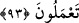

güzel vardır. Güzel sözlerin en yükseği ise Kur’ân ile Allah’ı zikretmektir. Bu, iki
güzelliği kendisinde toplar. Onun için medlûlü ancak zikrullah olan bütün âyetler gibi
Kur’ân ile Allah’ın zikrini dinlemekten (semâ’) daha yüce bir şey yoktur. Çünkü Kur’ân
âyetlerinin hepsi Allah’ın zikrini içermez. Âyetlerde meşrû kılınan hükümler de
nakledilmiş, Fir’avnların kıssaları, onların sözleri ve inkârları da aktarılmıştır. Gerçi
bunlar Kur’ân’dan olduğu için, okuyan kimsenin kendisine ve dinleyene büyük ecir
vardır. İşte böylece bilinmiş oldu ki Kur’ân’dan zikrullahın işitilmesi, kâfirlerin Allah
hakkında uygunsuz sözlerini dinlemekten daha efdaldir. Nitekim el-Fütûhât’ta böyle
geçmektedir.
Bilesin ki Hz. Peygamber (s.a.)’in ahlâkı Kur’ân idi. Sen de Kur’ân okurken Allah’ın
kullarını övdüğü sıfatlara bak ve onları yap ya da yapmaya azmet. Allah’ın yaptıkları
zaman kullarını yerdiği her sıfatı terk et veya terk etmeye azmet. Çünkü Allah Teâlâ
bunları ancak kendileriyle amel edesin diye senin için zikretti ve kitabında indirdi.
Kur’ân’ı tilâvet olarak hıfzedip ezberlediğin gibi onu amelin zâyi olmasından da
koruyup muhâfaza ettiğin zaman işte sen kâmil bir ersin.
“Artık kim doğru yola gelirse,” zikredilen ibâdet, İslâm ve Kur’ân tilâveti konusunda
ona tâbi olmak sûretiyle bana ulaşırsa “yalnız kendisi için gelmiş olur;”
Hidâyete/doğru yola ermesinin faydası başkasına değil kendisine âiddir.
“kim de” zikredilen hususlarda bana muhalefet etmekle “saparsa ona” onun hakkında
“de ki: Ben sadece uyarıcılardanım.” Böylece Allah’ın azâbı ve gazabıyla uyarma ve
korkutma sorumluluğundan çıkmış oldum. Artık onun vebâli bana değil, sadece hidâyeti
kabul etmeyene âiddir.
“Ve Kur’an’ı okumam (emredildi).” ifâdesinin mânâsının şöyle olması da
mümkündür: İnsanlara dâveti tekrar yoluyla tilâvete devam etmekle emrolundum. O
zaman “Artık kim hidâyete ererse/doğru yola gelirse,” ifâdesinin mânâsı da şöyledir:
Artık kim ona îman ile ve onda bulunan şer’î hükümlerle amel ederek hidâyete ererse;
kim de onu inkâr ile ve onda bulunanlarla amelden yüz çevirerek sapıtırsa...
Bu âyet, seyf âyeti ile neshedilmiştir.
et-Te’vîlâtü’n-Necmiyye’de der ki: “Burada işâret vardır ki güneşin ışığı madenler
içinde altın ve demiri terbiye ettiği gibi Kur’ân nuru da saîd ve şakî insanın kalb
madeninde hidâyet ve dalâlet cevherini terbiye eder, geliştirir ve büyütür. Nitekim şu
âyet buna delâlet etmektedir: “Allah onunla bir çok kimseyi saptırır, bir çoklarını da
doğru yola iletir.” (el-Bakara, 2/26). Rasûlullah (s.a.) de: “İnsanlar altın ve gümüş
madenleri gibidir.”[82] buyurmuştur.